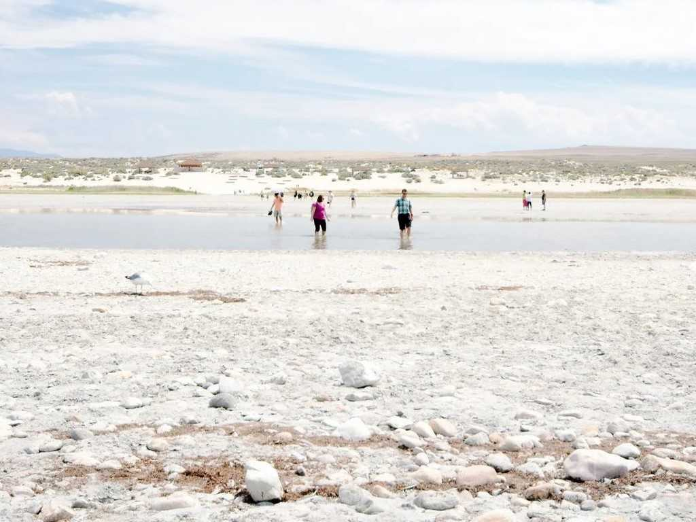
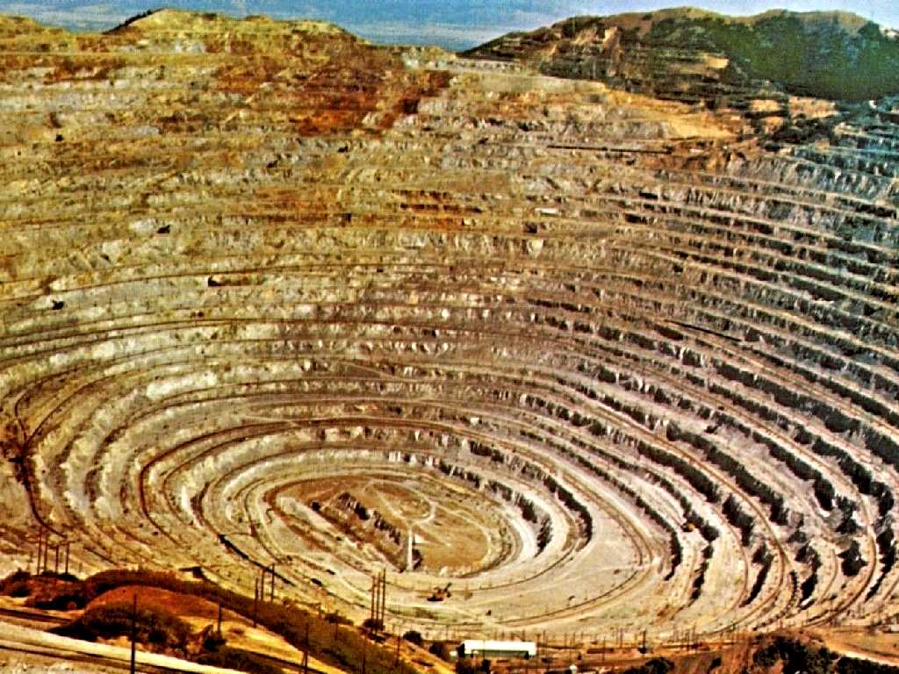
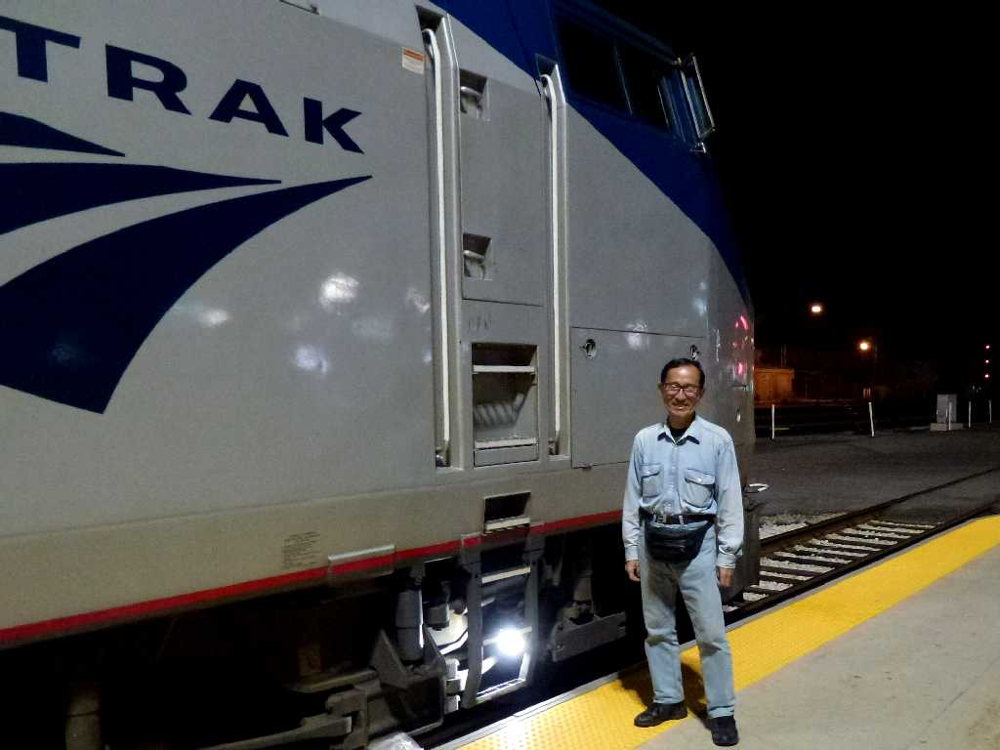

August 1970 Great Salt Lake
塩分濃度２７％の巨大塩湖で浮いて手足が上に出てしまい泳ぐことが出来ず塩水浴後は皮膚が塩の結晶でキラキラ光っていた

Kennecott Copper Mine
世界最大の露天掘り銅山は直径４㎞深さ１.2㎞ある
September 4 2013 Salt Lake City Station California Zephyr Train No.5 Timetable Amtrak
８０日間世界一周鉄道の旅で７３日目 ソルトレークシティ駅 学生時代の約４０年前は大陸縦断のグレーハウンドバスで来訪

September 4 2013 Amtrak Salt Lake City Station